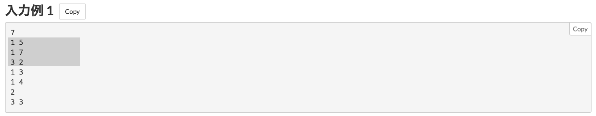
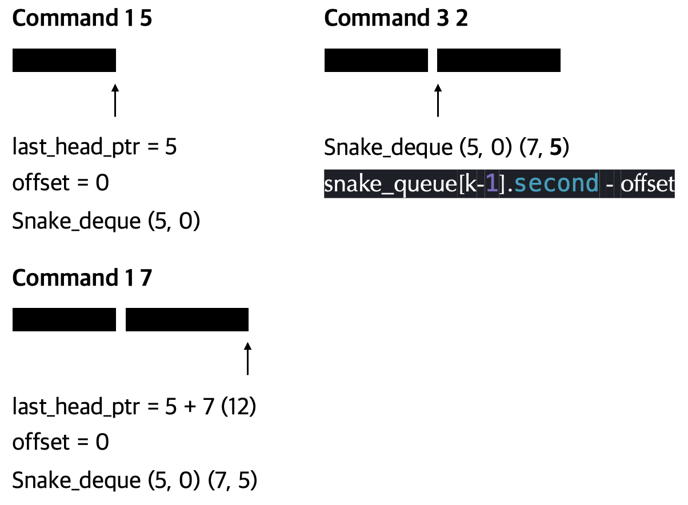
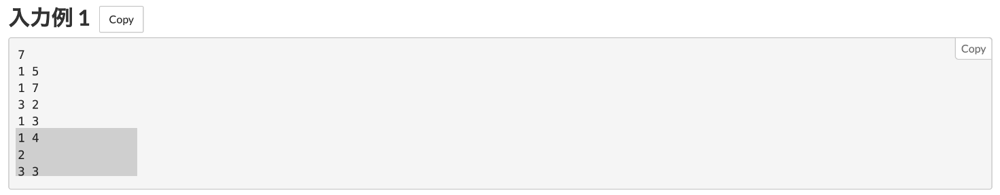
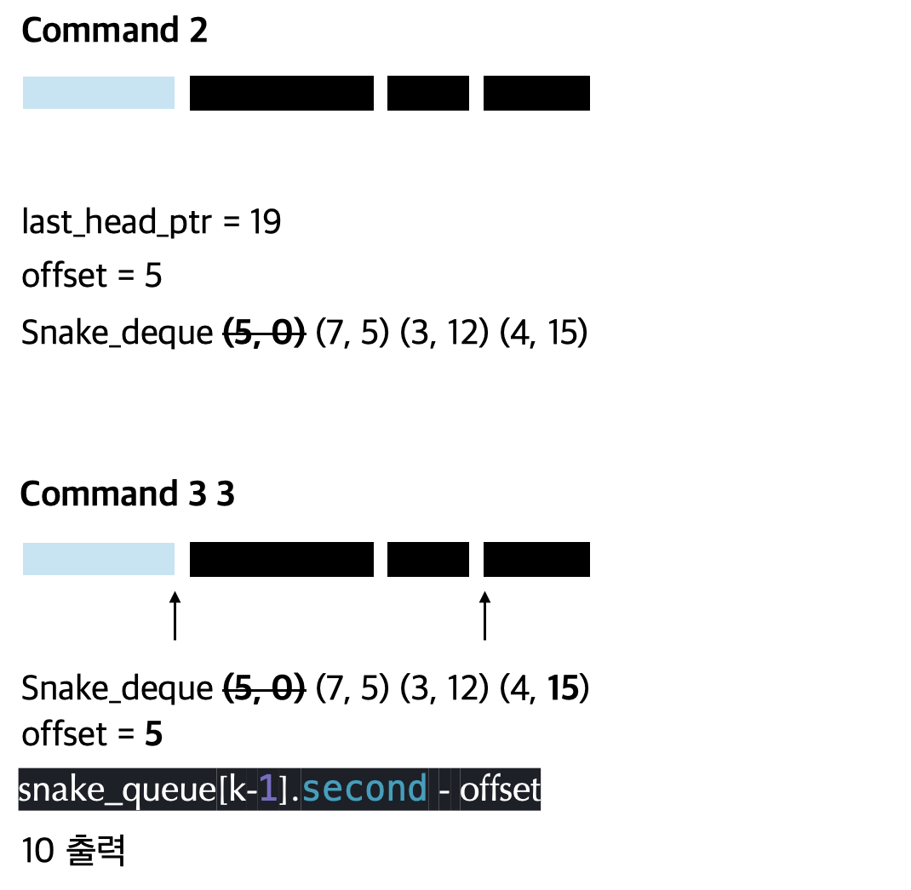

#Info
https://atcoder.jp/contests/abc389/tasks/abc389_c
C - Snake Queue
AtCoder is a programming contest site for anyone from beginners to experts. We hold weekly programming contests online.
atcoder.jp
#Solve
단순히 vector 혹은, 배열을 이용해 풀이하면 가장 최상단에 있는 뱀을 제거하는 코드에서 시간 복잡도가 O(N)만큼 소요됩니다.
그렇기에 효율적으로 최상단의 원소를 제거하기 위해 deque 자료구조를 사용했습니다.
또한 특정 위치의 뱀의 머리 좌표를 출력하는 과정에서 단순히 for loop를 돌려버리면 마찬가지로 시간복잡도가 O(N)만큼 걸립니다.
따라서 단순히 처음부터 모든 뱀의 길이를 더하는 것이 아닌, 뱀의 마지막 머리 좌표를 가리키는 변수 last_head_ptr를 별도로 선언하여 deque에 원소를 삽입할 때 같이 추가하는 prefix sum (누적합) 알고리즘을 택하였습니다.
첫 번째 케이스를 예시로 들어보겠습니다.
마지막 뱀의 머리 좌표 (last_head_ptr) 를 덱에 동시에 추가하여, 특정 머리 좌표를 출력하는 명령 (3, 2) 이 들어와도 단순히 해당 좌표에 저장된 누적합을 출력하기만 하면 O(1)만에 문제를 해결 가능합니다.
 
만약 가장 앞에 있는 뱀의 머리를 제거하는 명령(2) 이 들어와도 제거한 머리의 길이를 저장하는 변수 (offset) 에 따로 정의한 뒤, 출력 명령이 들어왔을떄 보정값을 뺀 값을 출력하면 마찬가지로 O(1) 만에 문제를 해결 가능합니다.
 
#Code
#include <iostream>
#include <deque>
#include <utility>
using namespace std;
int main(int argc, const char * argv[]) {
ios_base::sync_with_stdio(false);
cin.tie(0);
int n;
cin >> n;
deque<pair<long long, long long>> snake_queue;
long long offset = 0; // 좌표 보정값
long long last_head_ptr = 0; // 마지막 뱀의 머리 위치
for (int i = 0; i < n; i++) {
int command;
cin >> command;
// command 1 : l의 길이를 가지는 뱀을 뒤에 추가
if (command == 1) {
long long l;
cin >> l;
snake_queue.push_back({l, last_head_ptr});
last_head_ptr += l;
}
// command 2 : 최상단에 있는 뱀을 제거
else if (command == 2) {
long long m = snake_queue.front().first;
snake_queue.pop_front();
offset += m; // 보정값, 제거할 뱀의 길이
}
// command 3 : 앞에서부터 k번째에 있는 뱀의 머리 좌표를 출력
else {
int k;
cin >> k;
cout << snake_queue[k-1].second - offset << '\n';
}
}
return 0;
}
github
https://github.com/novvvv/PS/blob/main/atCoder/ABC389_%E5%95%8F%E9%A1%8CC_Snake%20Queue.cpp